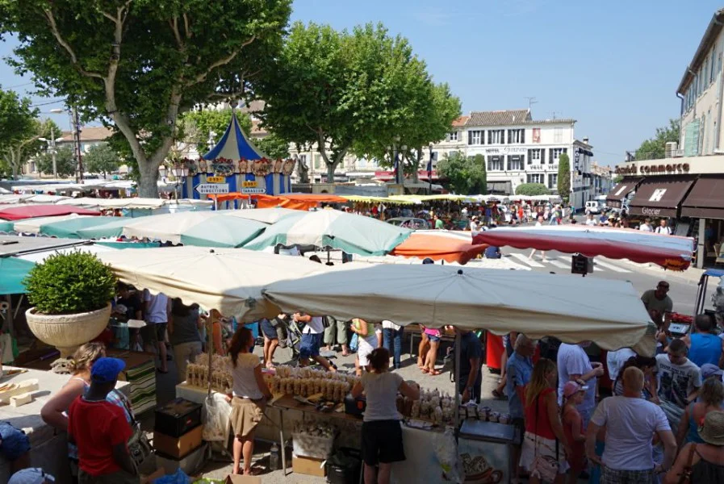

arrow_backChaque mercredi matin depuis plus d'un siecle, Saint-Remy-de-Provence se transforme. La Place de la Republique et toutes les rues adjacentes du centre ancien se couvrent de stands colorés — c'est l'un des marches les plus vivants et les plus authentiques de toute la Provence.
En haute saison (juillet-aout), jusqu'a 300 exposants envahissent la ville. Producteurs locaux, artisans, revendeurs de produits regionaux, fleuristes, createurs... tout le monde se retrouve ici.
Le marche du mercredi est aussi un evenement social : les habitants s'y retrouvent, les terrasses des cafes de la place se remplissent, et l'ambiance provencale bat son plein jusqu'a 13h.